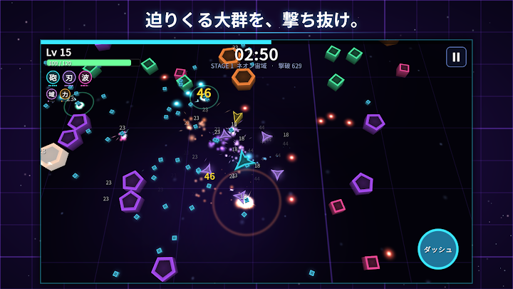
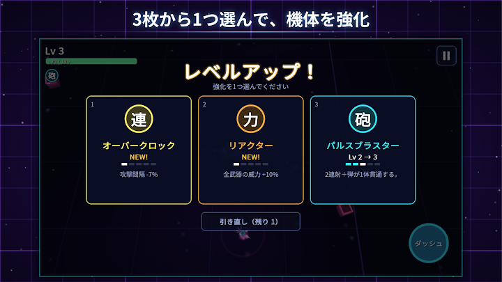
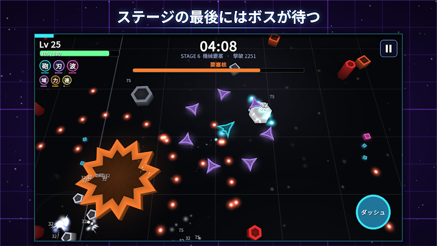
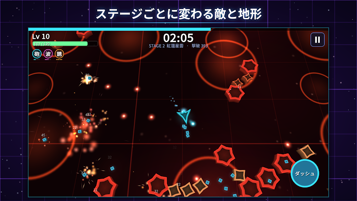
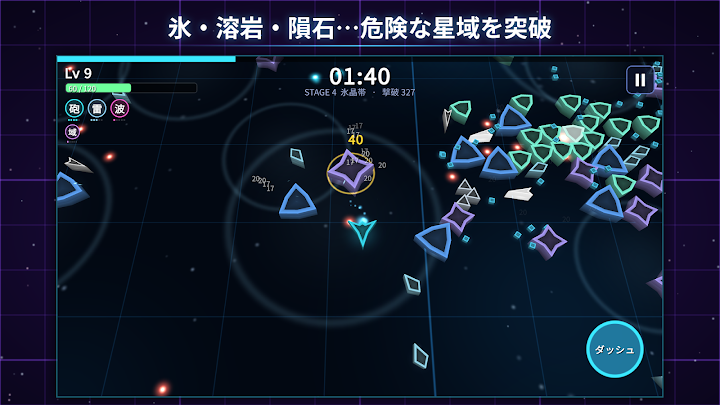
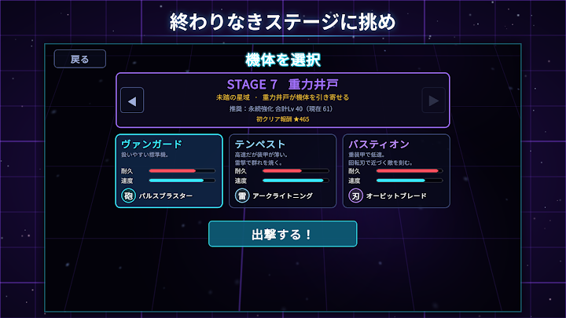
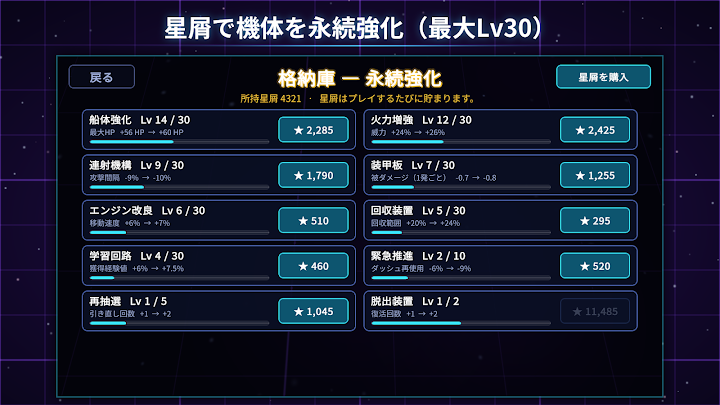
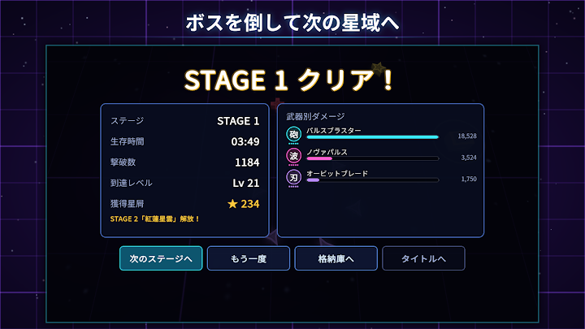

STEAM BASE
STEAM BASESTARFALL SURVIVOR
サバイバーシューティングSurvivor shooter四方から押し寄せる敵の大群を撃ち抜く、ネオンのサバイバーシューティング。操作は移動とダッシュだけ、武器は自動で撃ちます。A neon survivor shooter. You only move and dash — your weapons fire on their own as the swarm closes in.

スクリーンショットScreenshots








STARFALL SURVIVOR はどんなゲーム?What is STARFALL SURVIVOR?
撃て。避けろ。生き延びろ。
STARFALL SURVIVOR は、四方から押し寄せる敵の大群を撃ち抜いて生き延びる、ネオンのサバイバーシューティングです。操作は移動とダッシュだけ。武器は自動で発射されます。
遊び方
- 画面をドラッグして移動。ダッシュ中は無敵で、敵の群れをすり抜けられます
- 敵が落とす結晶を集めてレベルアップ。3枚のカードから強化を1つ選びます
- 1ステージは約4〜5分。最後に現れるボスを倒すとクリアし、次のステージが解放されます
何を装備するかが勝負
- 武器は5種類：パルスブラスター／シーカーミサイル／オービットブレード／アークライトニング／ノヴァパルス
- パッシブは5種類：強化装甲／推進器／リアクター／オーバークロック／フィールド増幅器
- 1回のプレイで装備できるのは、武器3つ・パッシブ3つまで。組み合わせで戦い方が変わります
ステージごとに変わる戦場
- 8つの星域：ネオン宙域、紅蓮星雲、小惑星帯、氷晶帯、毒霧の海、機械要塞、重力井戸、星墜の果て
- 溶岩だまり、弾をさえぎる小惑星、滑る氷、流れてくる毒の雲、レーザー柵、重力井戸、降りそそぐ隕石
- 星域ごとに敵の姿も攻撃も変わり、最後にはその星域のボスが待ち受けます
- 8つを越えると2周目へ。敵はさらに強くなり、終わりはありません
永続強化
- プレイで手に入る「星屑」で、機体を永続的に強化（主要7項目は最大Lv30）
- 先のステージほど手ごわくなります。強化を重ねて、少しずつ先へ進むゲームです
- ステージをクリアしていくと、新しい機体「テンペスト」「バスティオン」が解放されます
そのほか
- 広告なし
- オフラインで遊べます（購入時を除く）
- 日本語／英語に対応
- 星屑はアプリ内で購入することもできます（任意）。購入しなくても、すべてのステージ・機体・強化を遊べます
こんな方におすすめ
- サバイバー系、ヴァンサバ系のゲームが好き
- ローグライトで少しずつ強くなるのが好き
- 片手で遊べる短時間のシューティングを探している
- 敵の大群を一気に吹き飛ばす爽快感を味わいたい
Shoot. Dodge. Survive.
STARFALL SURVIVOR is a neon survivor shooter. Swarms close in from every side. You only steer and dash, and your weapons fire on their own.
HOW TO PLAY
- Drag anywhere to move. Dash to slip through the swarm: you are invulnerable while dashing
- Collect the crystals enemies drop to level up, then pick one of three upgrade cards
- A stage lasts 4 to 5 minutes. Destroy the boss at the end to clear it and unlock the next stage
YOUR LOADOUT DECIDES THE FIGHT
- 5 weapons: Pulse Blaster, Seeker Missiles, Orbit Blades, Arc Lightning, Nova Pulse
- 5 passives: Hull Plating, Thrusters, Reactor Core, Overclock, Field Amplifier
- You can equip only 3 weapons and 3 passives per run, so every pick matters
EVERY STAGE IS A DIFFERENT BATTLEFIELD
- 8 sectors: Neon Expanse, Crimson Nebula, Asteroid Belt, Frost Field, Toxic Sea, Machine Fortress, Gravity Well, Starfall Abyss
- Lava pools, asteroids that block shots, slippery ice, drifting toxic clouds, laser fences, gravity wells and meteor strikes
- Each sector has its own enemy shapes, attacks and boss
- After sector 8 the loop starts again with tougher enemies. There is no end
PERMANENT UPGRADES
- Spend the stardust you earn on permanent upgrades (the seven core stats go up to Lv 30)
- Later stages are tough: upgrade, push a little further, repeat
- Clear stages to unlock two more ships, Tempest and Bastion
ALSO
- No ads
- Playable offline (except purchases)
- English and Japanese
- Stardust can also be bought in the app (optional). Every stage, ship and upgrade can be reached without paying
よくある質問FAQ
無料で遊べますか?Is it free?
無料で遊べます。広告はありません。「星屑」はアプリ内で購入することもできます（任意）が、購入しなくても、すべてのステージ・機体・強化を遊べます。Yes, and there are no ads. Stardust can be bought in-app (optional), but every stage, ship and upgrade can be played without paying.
オフラインで遊べますか?Can I play offline?
はい、購入時を除いてオフラインで遊べます。Yes, except when making a purchase.
どんな操作ですか?How do the controls work?
画面をドラッグして移動するだけです。武器は自動で発射され、ダッシュ中は無敵になります。Drag to move. Weapons fire automatically, and you are invincible while dashing.
iPhone（iOS）でも遊べますか?Is it on iPhone (iOS)?
現在は Android 版（Google Play）のみです。App Store（iOS）では配信していません。Not at the moment — it is only on Android (Google Play), not on the App Store.